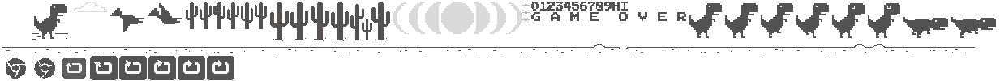
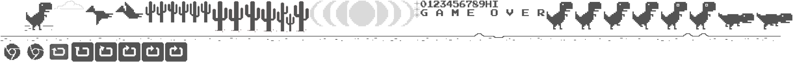

Tema: Brilho no Escuro
Dino e cactos azuis brilhando no escuro.
por DinoMod
O dinossauro do Chrome, agora com mods.
2 mods ativos
⚔ Modo Batalha

Espaço / ↑ para pular · ↓ para abaixar · Enter para recomeçar
Dino e cactos azuis brilhando no escuro.
por DinoMod
Céu estrelado com dino verde e azul.
por DinoMod
Céu laranja e rosa com silhuetas roxas.
por DinoMod
Tons de verde em uma mata clara.
por DinoMod
As quatro cores verdes do portátil clássico.
por DinoMod
Rosa e ciano neon em fundo roxo.
por DinoMod
Dino em brasa sobre fundo vulcânico.
por DinoMod
Tudo em ouro, para os campeões.
por DinoMod
Pulos longos e flutuantes, como na Lua.
por DinoMod
Começa rápido e acelera muito mais.
por DinoMod
Os cactos somem ao encostar. Nunca perde.
por DinoMod
Troca o dinossauro pelo Sonic.
por Comunidade
Pinta todos os sprites com um degradê neon.
por DinoMod
Mostra velocidade, pulos e obstáculos na tela.
por DinoMod
Explosão de confete a cada 100 pontos.
por DinoMod